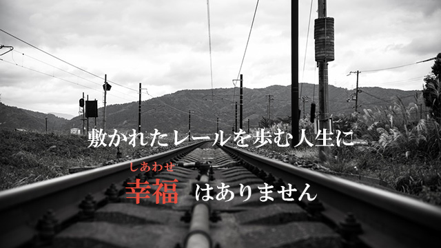
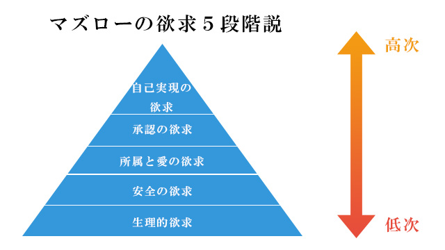

失敗とはネガティブなものではなく、その後の人生に不可欠なものである。
前回のブログ（子どもにたくさんの失敗を経験させよう）で私はそう書きましたし、講演会やセミナーなど思春期のお子さんを持つ方々を前にいつもこんな話をしています。
親の皆さんの反応はどれも大体同じ。
「頭では分かるのですが…」というもの。
理屈では分かるが、実際に我が子に失敗させたいかというとそれはチョット…というところなのでしょう。
それはそうですよね。誰だって我が子に失敗させたくない。順調に育ち堅実な人生を歩んで欲しい。私だってそうです。
間違いのない人生。浮き沈みのない平穏な生活。
そのためには危険をできるだけ避けて安全な道を歩む。
しかし実はこのような考えにはワナがあるのです。
そもそも「間違いのない人生」とはどういうものでしょうか。何の波乱も曲折もない平穏無事の人生などあり得るのでしょうか？
それどころか人生には多くの難題が待ち受けている。人間関係のトラブル、仕事上の悩み、金銭問題、病気や事故、自然災害…etc
近所の口やかましいオバさん（笑）から意地悪な上司、足を引っぱる部下。重くのしかかる住宅ローン、テロリズムの不安に至るまで、私たちの毎日は「問題」だらけではないでしょうか。
人生に問題が起こるのではなく、問題こそが人生を成り立たせる構成要素。そういう意味で人生とは「問題」の寄せ集めとさえ言ってよいのかも知れません。
解決できる問題もあるかも知れませんし永遠に解決できないように見える問題もあります。解決しなくてもよい問題もあるでしょう。
しかし、いずれにせよそこには多くの失敗や後悔があります。
だから親は、子どもに平穏無事の人生を期待するのではなく、問題だらけの人生であってもたくましく生き抜く知恵と力を、子ども自身が身につけていくような育て方をするべきでしょう。
ひたすら失敗を恐れて安全安心な道だけを歩ませるような親の態度は、子どもに「敷かれたレールの上を進め」というに等しく、それは子どもから「自分の人生」を取り上げることに等しいのです。
安全志向は社会の活力をなくす
このせいなのか、今の若者は冒険をしなくなっています。
まるで安全な道を歩く事だけが何より大切であるかのように…。
親が、我が子が安全で失敗のない人生を歩くことを何より大事に思っていることと見事に照応しているわけです。
大学生と話す機会が多いのですが、多くの人は学問への興味より就活のほうに関心が向いています。
「どうしてそんなに必死で、就活なの？」
と私がやや皮肉をこめて聞くと「イヤァ、やっぱりそれなりの生活したいですから」という返事。中には周囲にあおられてというか、要するに皆がやっているから「よく分からずやたらと（デタラメに）企業回り」に明け暮れている者もいます。（実は大半がこのタイプ）
自分なりの人生設計とか社会でやりたいことを考えているわけではなく（もちろん真剣に考えている者も少数いますが）、中学出たら高校へ、高校を出たら大学へ、大学に入ったら就活そしてできるだけ「安全そうな会社」へと、皆と同じ敷かれたレールの上を走らされているわけです。
私にはこの光景が表現は悪いけれど、シェパードに追われる羊の群れか、大量生産されベルトコンベアーで続々送り込まれる工業製品のように感じてしまいます。
先の大学生は「それなりの生活」と言いましたが、要は食うための手段としての働き口が会社員であり公務員なのでしょう。
私は会社員や公務員がダメなどというつもりは全くありません。
しかし、就職の動機が「食うため」「貧乏になりたくないため」というのではあまりに寂しい気がします。
職業はもっと神聖なものです。
しかもこれほど豊かになった日本社会で「食うため」つまり飢えないためというもっとも原始的な欲求に動機づけられているという現実。マズローの唱える欲求5段階説を引用するなら、安全欲求というもっとも低次のレベルにとどまっていることの悲しさを感じるのです。

自己実現理論（じこじつげんりろん）とは、アメリカ合衆国の心理学者・アブラハム・マズローが、「人間は自己実現に向かって絶えず成長する生きものである」と仮定し、人間の欲求を5段階の階層で理論化したものである。また、これは、「マズローの欲求段階説」とも称される。
参考：Wikipedia
たとえば良く聞く話ですが、アメリカなどではハーバードなどの名門大学を出た者の多くは、己の才能と夢に賭けて起業家を目指します。
インドや中国の若者たちも将来の人生設計をしっかりと立て、また国への貢献も考えて猛勉強し自分の専門分野をいくつか持とうとします。
大企業や公務員になって「食わせてもらおう」とする日本の若者たちとの差は広がるばかりです。
日本の企業が経済競争においてこの10数年「一人負け」を喫している（堺屋太一さん談）のも当然という気がします。日本社会の活力は益々失われていくでしょう。
敷かれたレールは不幸な人生
さて話を戻します。
子どもに「失敗」させまいとして親が先回りして心配する姿勢は、子どもに「敷かれたレールの上を歩くことが一番安全」というフィクションを信じ込ませてしまいます。
人と違う道を歩いてはいけない！
皆と同じ方向を進むのが安全！
というウソの神話を信じることは、子どもたちが本当にやりたいことや、自分の人生を自らの足で進むという当たり前の生き方を奪うことに通じるものです。
人間は、自主性と独自性を放棄してしまうと自分で人生の舵を切り自分らしい人生を生きることができなくなります。
若いうちは、世間や周囲の目など気にせず既存の価値観にもとらわれず、己の方法論で生きていくことがよいのです。
確かに多くの失敗や過ち、後悔に見舞われるでしょう。
しかし、いつの時代でも若者たちが新しい世界を夢見て、冒険の旅へ出るからこそ世界は刷新され進歩してきたのです。
そして人生に立ちはだかる多くの難問と向き合い乗り越えていくことのなかに自分らしい生の輝きを放つことができるのです。
そこには敷かれたレールを歩む人生には決して得られない充実感と幸福があるでしょう。